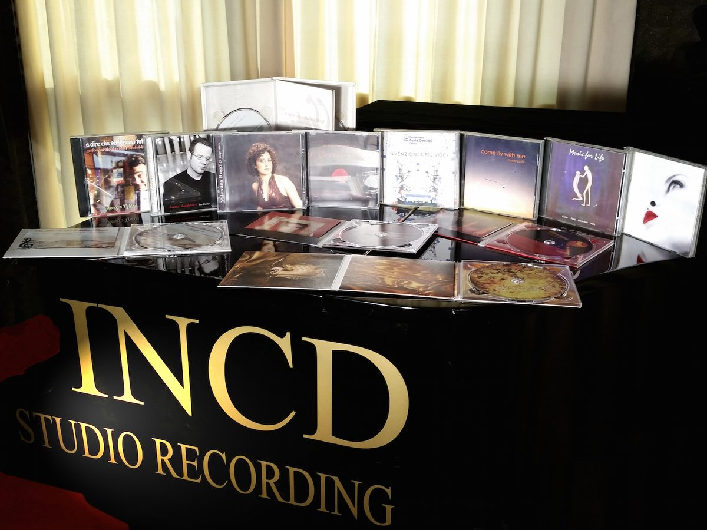

INCD STUDIO · Milano · dal 2013
Produzione e consulenza musicale a Milano
Where Sound Meets Vision
Registrazione, produzione e consulenza musicale per artisti e aziende. Un musicista e un ingegnere del suono, con oltre 40 anni di esperienza tra palco e regia, seguono il tuo progetto dall'idea al disco finito.
- 40+anni di esperienza
- 20+dischi prodotti
- 140+video pubblicati
Hanno lavorato con noi British Airways, Coface, Spencer Stuart, Fondazione Don Gnocchi e la Milano Fashion Week.
